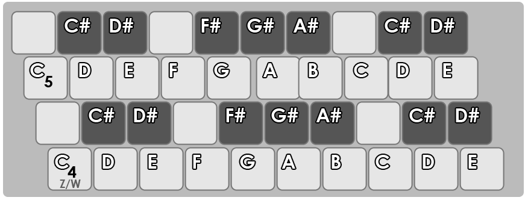

FM TITLE
you can play the notes in the keyboard with reference in the image below

with this slider you can control de volume
you can control the envelope of the oscilator (attack, delay, sustain, release) with this multislider